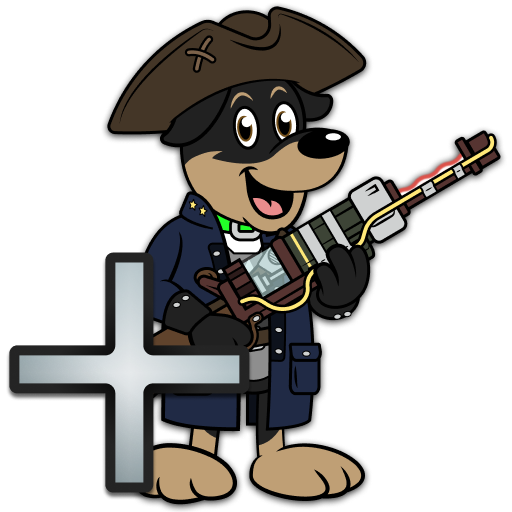

Base Finish
This is the final step for the base, "patched vanilla" part of the guide
Installation instructions:
- Download the file.
- Once it has finished downloading, click the
 button at the top of MO2 and select Open Profile folder.
button at the top of MO2 and select Open Profile folder. - Extract the loadorder.txt from the downloaded archive to the folder you opened and overwrite when prompted.
- Once the file is extracted, click F5 while you are on MO2 without any menu open.
- Right-click in the right pane of MO2 and select Enable all.
If you have not added any mods to the guide, PuddleReflectionFix.esp should be the bottom mod in your load order (the Plugins tab in the right pane of MO2) after applying the load order and refreshing MO2. If not, you made a mistake during mod installation.Automatically ensures your load order is correct for the guide.
You can join our Discord for support.
Launching the game
To run the game, use F4SE entry in Mod Organizer 2. You can use the Shortcut to create Desktop and Start Menu shortcuts, this will allow you to launch the game without opening MO2.


You have now completed the basic section of The Midnight Ride. If you don't want to mod your game further, you can now start playing. Have fun!
If you are hungry for more mods, head to the Tweaks page and keep reading.